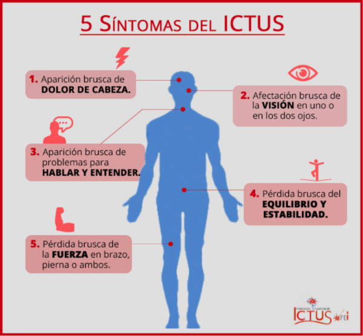

Un accidente cerebrovascular isquémico ocurre cuando se interrumpe o se reduce el suministro de sangre a una parte del cerebro, lo que impide que el tejido cerebral reciba oxígeno y nutrientes. Las células cerebrales comienzan a morir en minutos.
Un accidente cerebrovascular es una emergencia médica, y el tratamiento inmediato es crucial. La acción temprana puede reducir el daño cerebral y otras complicaciones.
Hay dos causas principales:
Si tú o alguien con quien estás puede estar sufriendo un accidente cerebrovascular, presta especial atención al momento en que comenzaron los síntomas. Algunas opciones de tratamiento son más eficaces cuando se administran poco después de que comienza el accidente cerebrovascular.
Los signos y síntomas del accidente cerebrovascular incluyen:
Actualmente, no existe ningún sistema que permita detectar con mucha antelación un ictus. Por lo que la mayoría de pacientes acuden a consulta una vez comienzan a presentar síntomas.
Sin embargo, existen ciertos medicamentos preventivos como: Antiplaquetarios o anticoagulantes. Así como llevar un estilo de vida saludable, teniendo en cuenta ciertos factores fundamentales:
El tratamiento recibido dependerá de los efectos secundarios del paciente tras el ataque y del área afectada. En el mejor de los casos, el paciente será atendido en hospital y tras ello iniciará un extenso proceso de recuperación y rehabilitación tanto intelectual como motora.
No obstante, si el estado del paciente sufre complicaciones, puede acabar en coma o incluso producirse la muerte.
Para más información, consulte el siguiente vídeo:
Marta Nadal Herraiz y Jazmín Ramírez Agudelo
©Copyright. Todos los derechos reservados. 2022
Puedes volver a la página principal, haciendo click en logo o a través del siguiente enlace:aquí
También le puede interesar: UAlicante